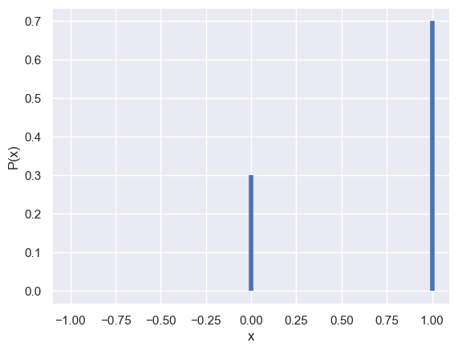
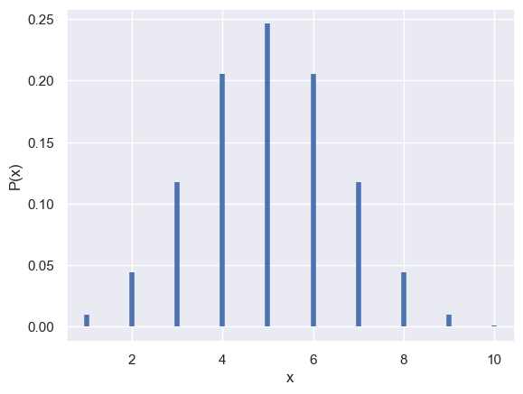
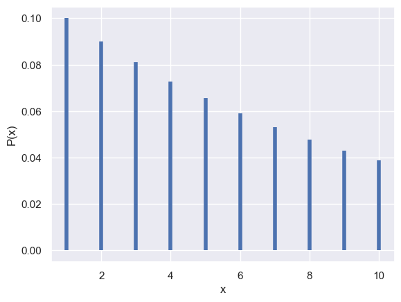
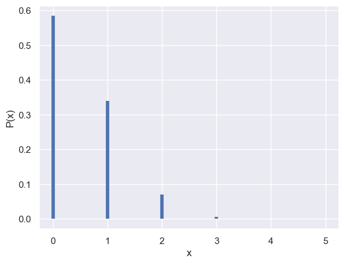
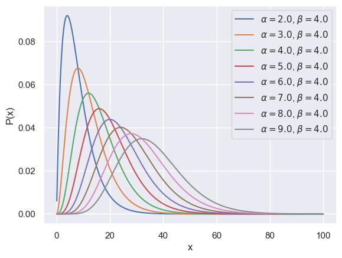
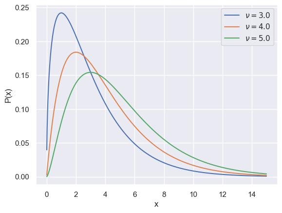

Code
import numpy as np
import pandas as pd
import random as rnd
import math
import matplotlib.pyplot as plt
from scipy.stats import *
import seaborn as sns
sns.set()import numpy as np
import pandas as pd
import random as rnd
import math
import matplotlib.pyplot as plt
from scipy.stats import *
import seaborn as sns
sns.set()def plot1(x,f):
"""Convenient plotting of discrete distributions
x : x-axis values
f : scipy.stats pmf or pdf with parameters"""
plt.xlabel('x')
plt.ylabel('P(x)')
plt.vlines(x,0,f, lw=4, color='b')
plt.show()
def plot2(x, f, labels=[]):
"""Convenient plotting of continuous distributions with varying parameters
x : x-axis values
f : list of scipy.stats pmf or pdf with parameters
labels: parameter annotations"""
plt.xlabel('x')
plt.ylabel('P(x)')
for i,label in zip(f,labels):
plt.plot(x,i, label=label)
plt.legend()
plt.show()For \(k \ge 1\) as a given integer, \(X\) is uniformly distributed on \(\{1, ..., k\}\) if:
\[\begin{equation} f(x) = \begin{cases} 1/k & \text{for } x = 1, ..., k\\ 0 & \text{otherwise} \end{cases} \end{equation}\]
k = 10
low, high = 1, k
x = np.arange(1,k)
f = randint.pmf(x,low,high)
plot1(x,f)
Let \(X\) represent an all or nothing event. Then \(P(X=1) = p\) and \(P(X=0) = 1-p\) for some \(p \in [0, 1]\). \(X\sim\) Bernoulli if:
\[f(x) = p^x(1-p)^{1-x} \text{ for } x \in \{0, 1\}\]
x = np.arange(-1,2,1)
p = .7
f = bernoulli.pmf(x,p)
plot1(x,f)
The binomial distribution answers the question, given a probabilities \(p\) and \(1-p\) for outcomes 1 and 2 of a Bernoulli trial, with N trials, what are the odds of seeing \(x\) and \(N-x\) of outcomes 1 and 2, respectively?
Suppose we have a coin which falls on heads with probability \(p \in [0,1]\) and flip it \(n\) times. Assuming the tosses are independent of each other we can represent the number of heads as \(X\) and probability of getting \(x\) heads as \(f(X=x)\). Then:
\[\begin{equation} f(x) = \begin{cases} \binom{n}{x}p^x(1-p)^{n-x} & \text{for } x = 0, ..., n\\ 0 & \text{otherwise} \end{cases} \end{equation}\]
We say \(X \text{~ Binomial}(n,p)\) where \(X\) is the random variable and \(n\) and \(p\) are the parameters. Adapting our notation, another form is:
\[\begin{equation} f(x|n, p) = \begin{cases} \binom{n}{x}p^x(1-p)^{n-x} & \text{for } x = 0, ..., n\\ 0 & \text{otherwise} \end{cases} \end{equation}\]
n=10
x = np.arange(1,11,1)
p = .5
f = binom.pmf(x,n,p)
plot1(x,f)
This is a generalization of the binomial distribution, where now, instead of two outcomes, there are \(m\) outcomes, with probabilities \(p_i\) where \(i \in [1,2,... m]\). If there are a total of \(N\) trials, then the probability of having the \(N\) trials split into a specific set of outcomes \(x_i\) is given by:
\[f(x_1, x_2,...,x_m) = \dfrac{m!}{x_1!x_2!...x_m!}p_1^{x_1}p_2^{x_2}...p_m^{x_m} = m!\prod^m_{i=1}\dfrac{p_i^{x_i}}{x_i!}\]
Since it’s a multidimensional function, it’s difficult to visualize. Written in vector notation with outcome vector \(\bf x\) and probability vector \(\bf p\) as parameter, both of dimension \(m\):
\[f(\mathbf{x} | \mathbf{p}) = m!\prod^m_{i=1}\dfrac{p_i^{x_i}}{x_i!}\]
For events like flipping a coin till first heads, where \(X\) is the number of flips, the probability to meet the condition with \(k\) flips is given by:
\[P(X=k) = p(1-p)^{k-1}, \text{ } k\ge1\]
It’s also worth noting that:
\[\sum^{\infty}_{k=1}P(X=k) = p\sum^{\infty}_{k=0}(1-p)^k = \dfrac{p}{1-(1-p)} = 1\]
p = .1
f = geom.pmf(x,p)
plot1(x,f)
In contrast to the binomial distribution, for draws without replacement, the probability of a successful draw changes with each draw. Given a total of \(N\) objects with \(K\) success objects and \(N-K\) others, the probability of \(k\) successes in \(n\) draws is given by the total combinations of drawing \(k\) out of \(K\) successes and \(n-k\) out of \(N-K\) other objects out of the total ways to draw \(n\) out of \(N\) objects:
\[ P(X = k|n,N,K) = \dfrac{\binom{K}{k}\binom{N-K}{n-k}}{\binom{N}{n}}\]
N, K, n = 100, 5, 10
k = np.arange(0,K+1,1)
f = hypergeom.pmf(k, N, n, K)
plot1(k,f)
Often used to model rare events, \(X \text{~ Poisson }(\lambda)\) is defined by:
\[ f(x) = \exp(-\lambda)\frac{\lambda^x}{x!}\]
It’s also worth noting that:
\[\sum^{\infty}_{x=0}f(x) = \exp(-\lambda) \sum^{\infty}_{x=0}\frac{\lambda^x}{x!} = \exp(-\lambda)\exp(\lambda)= 1\]
x = np.arange(1,200,1)
k= 50
f = poisson.pmf(x,k)
plot1(x,f)
plot1(x,poisson.pmf(x,5))\(X\) has a Uniform \((a,b)\) distribution, or \(X \text{ ~Uniform }(a,b)\) if:
\[\begin{equation} f(x) = \begin{cases} \frac{1}{b-a} & \text{for } x \in[a,b]\\ 0 & \text{otherwise} \end{cases} \end{equation}\]
where \(a < b\). The distribution function is:
\[\begin{equation} F(x) = \begin{cases} 0 & x < a\\ \frac{x-a}{b-a} & x \in [a,b]\\ 1 & x > b \end{cases} \end{equation}\]
loc = 0
scale = 11
x = np.arange(loc,loc+scale)
f = uniform.pdf(x, loc,scale)
plot2(x,[f], [None])C:\Users\Jonathan\AppData\Local\Temp\ipykernel_20100\1199473827.py:19: UserWarning: No artists with labels found to put in legend. Note that artists whose label start with an underscore are ignored when legend() is called with no argument.
plt.legend()\(X\) has a Normal or Gaussian distribution with parameters \(\mu\) and \(\sigma\), denoted by \(X \text{ ~ }N(\mu, \sigma^2)\) if:
\[f(x) = \frac{1}{\sigma \sqrt{2 \pi}} \exp\Big\{-\frac{1}{2\sigma^2}(x-\mu)^2\Big\}, \quad\text{ } x \in \mathbb{R} \]
u_ = [0, 0, 0, 0, 1, 2,]
sigma_ = [1,2,5,1,1]
x = np.arange(-10,10,.1)
f = [norm.pdf(x,u,sigma) for u,sigma in zip(u_, sigma_)]
labels = [r'$\mu = %d$, $\sigma = %d$' %(u,sigma) for u, sigma in zip(u_, sigma_)]
plot2(x,f, labels)\(X\) has an Exponential distribution with parameber \(\beta\), noted by \(X \text{ ~ Exp}(\beta)\) if:
\[f(x) = \dfrac{1}{\beta}\exp\Big(-\frac{x}{\beta}\Big), \quad \text{ } x >0\]
x = np.arange(.1,10,.01)
b = np.arange(0,5, .5)
f = [expon.pdf(x, B) for B in b]
labels = [r'$\beta = %.1f$' % B for B in b]
plot2(x,f,labels)
For \(\alpha > 0\), the Gamma function is defined as:
\[ \Gamma(\alpha) \equiv \int^\infty_0 y^{\alpha -1}\exp(-y)dy\]
\(X\) has a Gamma distribution with parameters \(\alpha\) and \(\beta\), or \(X \text{ ~ Gamma}(\alpha, \beta)\), if:
\[ f(x) = \dfrac{1}{\beta^\alpha \Gamma(\alpha)}x^{\alpha-1}\exp\Big(-\dfrac{x}{\beta}\Big), \quad \text{ } x>0\]
Special cases: - The Exponential distribution is the special case of \(\text{Gamma}(1, \beta)\) - The Chi-square distribution is a special case of \(\text{Gamma}(p/2, 2)\) - Using \(y = u^2\), \(dy = 2udu\), and the result $^_{-}({-u^2}) = $
x = np.arange(.1,100,.01)
A = np.arange(2,10,1)# shape
B = np.arange(4,5,1) # scale
f = [gamma.pdf(x,a=a,scale=b) for a in A for b in B]
labels = [r'$\alpha = %.1f$, $\beta = %.1f$' % (a,b) for a in A for b in B]
plot2(x,f, labels)
\(X\) has a \(\chi^2\) distribution with \(p\) degrees of freedom, denoted by \(X \text{ ~ }\chi_p^2\) if:
\[f(x) = \dfrac{1}{\Gamma(p/2) 2^{p/2}}x^{(p/2)-1}\exp(-x/2) \text{, } \quad x>0\]
This distribution is related to the normal distribution in that if a variable \(X\) has a standard normal distribution, its square follows a chi-square distribution with one degree of freedom: \(Y = X^2 \text{~} \chi^2_1\).
Often, we compare how far a value is from an expected one by finding the square of their difference. If the variable converges to a normal distribution, the square of the difference can be considered a chi squared distribution.
x= np.arange(.01,20,.01)
df_ = np.arange(3,6,1)
x = np.arange(0.01,15,.01)
f = [chi2.pdf(x,df) for df in df_]
labels = [r'$\nu = %.1f$' %df for df in df_]
plot2(x,f, labels)
The Beta function is defined as
\[\text{Beta}(a,b) \equiv \int^\infty_0 t^{a-1}(1-t)^{b-1} = \dfrac{\Gamma(a)\Gamma(b)}{\Gamma(a+b)}\]
See here for the proof of the last equality which involves change of variables in evaluating the product of two Gamma functions.
\(X\) has a Beta distribution with parameters \(\alpha > 0\) and \(\beta > 0\), denoted by \(X \text{ ~ Beta} (\alpha, \beta)\) if:
\[f(x) = \dfrac{\Gamma(\alpha + \beta)}{\Gamma(\alpha)\Gamma(\beta)}x^{\alpha-1}(1-x)^{\beta-1}, \quad\text{ } 0<x<1\]
Alternatively, we can view the the beta distribution as a distribution over probabilities, \(p\) and parameters of number of outcomes \(u_1\) and \(u_2\):
\[f(p|u_1,u_2) = \dfrac{\Gamma(u_1 + u_2)}{\Gamma(u_1)\Gamma(u_2)}p^{u_1-1}(1-p)^{u_2-1}, \quad\text{ } 0<p<1\]
x = np.arange(0.1,.99,.001)
A = np.arange(1,6,1)# shape
#B = np.arange(1,6,1) # scale
B = 6-A
#f = [beta.pdf(x,a=a,b=b) for a in A for b in B]
f = [beta.pdf(x, a=a,b=b) for a,b in zip(A,B)]
#labels = [r'$\alpha = %.1f$, $\beta = %.1f$' % (a,b) for a in A for b in B]
labels = [r'$\alpha = %.1f$, $\beta = %.1f$' % (a,b) for a,b in zip(A,B)]
plot2(x,f, labels)The Dirichlet distribution is an extention of the beta distribution to more dimensions. It’s a density over a K-dimensional vector, \(\mathbf{p}\), with \(\sum p_i = 1\). It is defined as:
\[f(\mathbf{p}|\alpha \mathbf{m}) = \dfrac{1}{Z(\alpha \mathbf{m})}\prod_{i=1}^K p^{\alpha m_i - 1}_i \equiv \text{Dirichlet}^{(K)}(\mathbf{p}|\alpha\mathbf{m}), \quad\text{ } 0<p<1\]
where \(\mathbf{m}\) is normalized such that \(\sum m_i = 1\) and \(\alpha > 0\). The normalizing constant is defined as:
\[Z(\alpha\mathbf{m}) = \prod_i \Gamma(\alpha m_i)/\Gamma(\alpha)\]
The parameter \(\mathbf{m}\) is the mean of the probability distribution while the constant \(\alpha\)
\(X\) has a \(t\) distribution with \(v\) degrees of freedom, denoted by \(X \text{ ~ }t_v\) - if:
\[f(x) = \dfrac{\Gamma\Big(\dfrac{v+1}{2}\Big)}{\Gamma \Big(\dfrac{v}{2}\Big)}\dfrac{1}{\sqrt{\nu \pi}} \dfrac{1}{\Big(1+\dfrac{x^2}{v}\Big)^{(v+1)/2}}\]
The Cauchy is a special case of the \(t\) distribution with \(v = 1\). The density is:
\[f(x) = \dfrac{1}{\pi (1+x^2)}\]
We can see that it’s a probability density since it’s never negative, and it integrates to unity:
\[\int^\infty_{-\infty} f(x)dx = \dfrac{1}{\pi}\int^\infty_{-\infty}\dfrac{1}{\pi (1+x^2)} = \dfrac{1}{\pi}\int^\infty_{-\infty}\dfrac{d\arctan}{dx} = \dfrac{1}{\pi}[\arctan(\infty) - \arctan(-\infty)] = \dfrac{1}{\pi}\Big[\dfrac{\pi}{2}-\Big(-\dfrac{\pi}{2}\Big)\Big]=1\]
While the mean and variance do not exist for the Cauchy distribution, it often is seen with location parameter \(\mu\) and scale parameter \(\sigma\) by the transformation \(x \rightarrow \dfrac{x-\mu}{\sigma}\), and \(dx \rightarrow \frac{1}{\sigma}\) to obtain the modified pdf:
\[f(x) = \dfrac{1}{\sigma\pi \Big(1+\big[\frac{x-\mu}{\sigma}\big]^2\Big)}\]
df_ = np.arange(1,5,1)
x = np.arange(-10,10,.01)
f = [t.pdf(x,df) for df in df_]
labels = [r'$\nu = %.1f$' %df for df in df_]
plot2(x,f, labels)Let \(X|W\) ~ \(N(0,W)\) and let \(W ~ Gamma(\nu/2, \nu/2)\). Then the distribution of \(X\) is:
\[\begin{align} f_X(x) &= \int^{\infty}_0 \\ &\propto \frac{1}{\sqrt{w}}\exp\big(-\frac{x^2}{2w}\big)\\ \end{align}\]
\[\begin{equation} f(x) = \begin{cases} \dfrac{\alpha x_m^\alpha}{x^{\alpha+1}} & \text{for } x \ge x_m\\ 0 & \text{for } x < x_m \end{cases} \end{equation}\]
import numpy as np
x = np.arange(0.01,10,.01)
a_ = np.arange(0,6,1)
f = [pareto.pdf(x,a, scale=1) for a in a_]
labels = [r'$\alpha = %.1f$' %a for a in a_]
plot2(x,f, labels)\(X\) has a Log-normal distribution with parameters \(\mu\) and \(\sigma\), denoted by $ X (, )$ if \(\ln X \sim N(\mu, \sigma^2)\). This results in a probability distribution function of:
\[f(x) = \frac{1}{x\sigma \sqrt{2 \pi}} \exp\Big\{-\frac{1}{2\sigma^2}(\ln x-\mu)^2\Big\}, \quad\text{ } x \in \mathbb{R} \]
u_ = [0,0,1,1]
sigma_ = [.1,.25, .5, 1]
x = np.arange(0,5,.01)
f = [lognorm.pdf(x,loc=u,s=sigma) for u,sigma in zip(u_, sigma_)]
labels = [r'$\mu = %d$, $\sigma = %.2f$' %(u,sigma) for u, sigma in zip(u_, sigma_)]
plot2(x,f, labels)
For convenience \(\overline{X} = \dfrac{\sum^n_{i=1}X_i}{n}\) and \(S^2 = \dfrac{\sum^n_{i=1} (X_i-\overline{X})^2}{n}\).
| Distribution | Mean | Variance | Maximum Likelihood Estimator | Moment Generating Function |
|---|---|---|---|---|
| Point mass at a | a | 0 | N | N |
| Bernoulli (p) | p | p(1-p) | \(\hat{p} =\overline{X}\) | \(1 + pe^t - p\) |
| Binomial (n, p) | np | np(1-p) | \(\hat{p} =\overline{X}\) | \((1 + pe^t - p)^n\) |
| Geometric | 1/p | \(\dfrac{(1-p)}{p^2}\) | \(\hat{p} =\dfrac{1}{\overline{X}}\) | N/a |
| Hypergeometric | \(n\dfrac{K}{N}\) | \(n\dfrac{K}{N}\dfrac{(N-K)}{N}\dfrac{N-n}{N-1}\) | ||
| Poisson \((\lambda)\) | \(\lambda\) | \(\lambda\) | \(\hat{\lambda} = \overline{X}\) | \(\exp\Big(\lambda[e^t-1]\Big)\) |
| Uniform \((a, b)\) | \[\dfrac{(a+b)}{2}\] | \[\dfrac{(b-a)^2}{12}\] | \[\begin{align} \text{for U}&(0,\theta) \\ \hat{\theta} &= \max\{X_i\}\end{align}\] | |
| Normal \((\mu, \sigma^2)\) | \(\mu\) | \(\sigma^2\) | \[\begin{align}\hat{p}&=\overline{X}\\ \quad \hat{\sigma} &=S\end{align}\] | \(\exp\Big(\mu t + \frac{\sigma^2 t^2}{2}\Big)\) |
| Exponential \((\beta)\) | \(\beta\) | \(\beta^2\) | \[\hat{\beta}= \overline{X}\] | \[\dfrac{1}{(1-\beta t)}\] |
| Gamma \((\alpha, \beta)\) | \(\alpha \beta\) | \(\alpha \beta^2\) | \(\hat{\beta}= \dfrac{\overline{X}}{\alpha}\) | \(\dfrac{1}{(1-\beta t)^\alpha}\) |
| Beta \((\alpha, \beta)\) | \(\dfrac{\alpha}{(\alpha + \beta)}\) | \(\dfrac{\alpha \beta}{(\alpha + \beta)^2(\alpha + \beta + 1)}\) | ||
| \(t_{\nu}\) | 0 if \((\nu > 1)\) | \(\dfrac{\nu}{\nu - 2}\) | ||
| \(\chi^2_p\) | p | 2p | \(\dfrac{1}{(1-2 t)^{p/2}}\) | |
| Pareto | \(\dfrac{\alpha x^\alpha_m}{\alpha-1}\) | \(\dfrac{\alpha x^\alpha_m}{(\alpha-2)(\alpha-1)^2}\) | \[\begin{align}\hat{x}_m &= x_{(1)}\\ \hat{\alpha}&= \dfrac{1}{\frac{1}{n}\sum^n_{i=1}{\ln x_i}- \ln(x_1)} \end{align}\] | |
| Multinomial \((n, \mathbf{p})\) | \(n\mathbf{p}\) | \[\begin{align}M_{ii} &= np_i(1-p_i)\\ M_{ij}&= -np_i p_j \end{align}\] | \(\hat{\mathbf{p}} =\overline{X}\) | |
| Multivariate Normal \((\mu, \Sigma)\) | \(\mu\) | Matrix \(\Sigma_{ij} = \text{Cov}(X_i, X_j)\) |